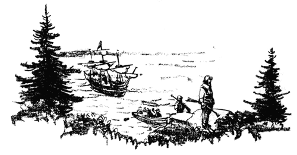

A Step Backward in Time
If you lived in the early days of the American colonies, you would know how important iron was to everyone. Your mother would cook food in an iron pot hung over the fire on an iron pothook. Your father would fell trees with an iron axe, cut boards with an iron saw, and hammer iron nails with an iron hammer. Even your teacher would use iron, ringing an iron bell to call you and other pupils to school.
During the first years of America's settlement, all iron was imported from England. Some colonists attempted to make iron, but without success. In 1643 skilled ironworkers were brought from England to Massachusetts to build and operate an iron-producing plant. By 1650 the Saugus Iron Works was manufacturing iron as fine as any made in England.
As you look through this book, try to imagine that you are taking a giant step backward in time to the year 1650. Then, more than 300 years ago, boys and girls like you worked and played at Hammersmith, the ironworks village named for the ironworkers' former home in England. Everyone had to work hard to obtain food, shelter, and clothing, because there were no labor-saving appliances.
Boys and girls helped to grow vegetables and fruits, pick wild berries, and catch fish. They did many chores around their homes, such as fetching firewood and drawing water from a well. They tended sheep, carded wool, spun yarn, and wove cloth for dresses and suits.
To understand their situation, pretend that you and your parents have left England, sailed for many weeks across the stormy Atlantic Ocean, and are now settling into a new home in Hammersmith.
1. Who used iron in colonial days?
2. Name some iron objects used then.
3. How did living conditions differ from those of today?
4. Where was iron first successfully manufactured in North America?